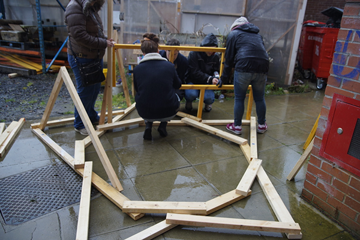
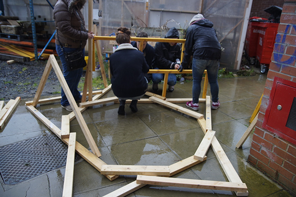

GDFS x 44 Flavours
At Graphic Design Festival Scotland myself and a team of others from Edinburgh College of Art collaborated with Sebastian Bagge and Julio Rölle of 44 Flavours, an art and design duo from Berlin.
We used found materials such as wood and a lot of paint to create this one-off installation over the course of two days. The structure currently sits at The Whiskey Bond in Glasgow.
The team: Rachel Millar, Julia Beck, Ian Scott Moncrieff and Emily Rowe.
More about 44 Flavours here.
 
